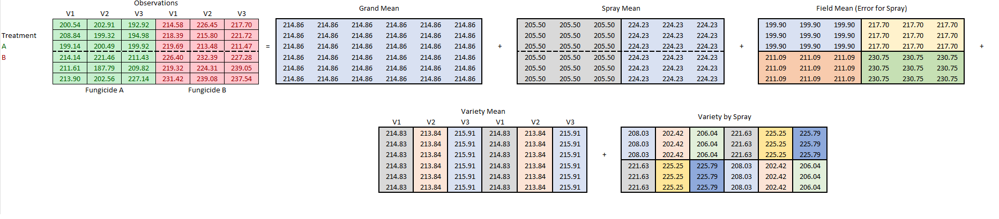
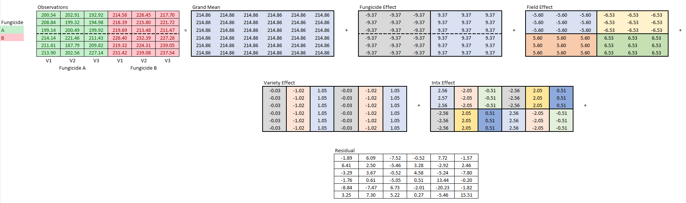
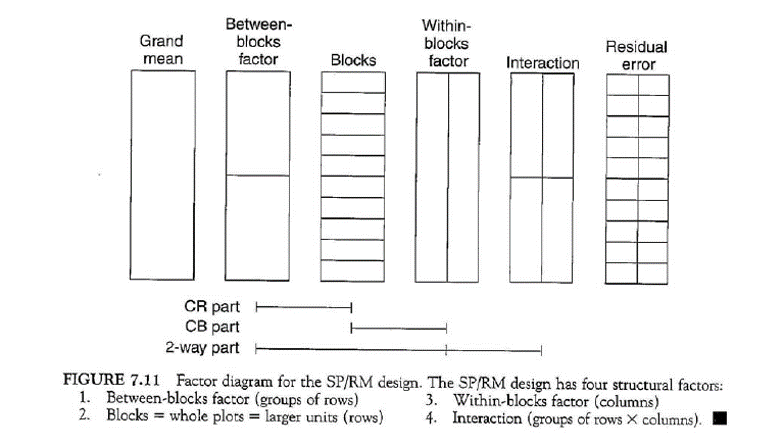

| Field | Fungicide | Variety |
|---|---|---|
| 1 | A | 1 |
| 1 | A | 2 |
| 1 | A | 3 |
| 1 | A | 1 |
| 1 | A | 2 |
| 1 | A | 3 |
| 1 | A | 1 |
| 1 | A | 2 |
| 1 | A | 3 |
| 2 | B | 1 |
| 2 | B | 2 |
| 2 | B | 3 |
| 2 | B | 1 |
| 2 | B | 2 |
| 2 | B | 3 |
| 2 | B | 1 |
| 2 | B | 2 |
| 2 | B | 3 |
| 3 | A | 1 |
| 3 | A | 2 |
| 3 | A | 3 |
| 3 | A | 1 |
| 3 | A | 2 |
| 3 | A | 3 |
| 3 | A | 1 |
| 3 | A | 2 |
| 3 | A | 3 |
| 4 | B | 1 |
| 4 | B | 2 |
| 4 | B | 3 |
| 4 | B | 1 |
| 4 | B | 2 |
| 4 | B | 3 |
| 4 | B | 1 |
| 4 | B | 2 |
| 4 | B | 3 |
The Split Plot Design
Overview
This section will describe how to set up and analyze factorial designs with 2 levels of experimental units. This situation occurs when one level of the experiment cannot be easily randomized because of physical constraints. These types of studies are common in agriculture, psychology and laboratory experiments.
We introduce the concept of nested experimental designs with a Split-Plot design common in agriculture. We conclude this chapter with a discussion about other versions of nested designs and why different terminologies arise in different contexts.
A split-plot design consists of a Whole-plot factor and a Sub-plot factor.
Because of the physical limitation of randomization, whole-plot factors often have limited replications compared to the subplot factor. To analyze these designs appropriately, it is necessary to account for the fact that each level of experimental unit has different levels of replication. It requires 2 separate error terms to test each level of experimental unit.
Consider 2 examples:
A researcher wants to test the impact of humidity, fungicide and their interaction on tomato yield in greenhouses. Because it is impossible to randomly assign humidity levels within a section of greenhouse, greenhouse would be one level of experimental unit (whole-plot) and fertilizer treatment randomly assigned within a greenhouse would be another level of experimental unit (sub-plot).
A lab manager would like to test the impact of freezer temperature on the life cycle of certain reagents. It is impossible to randomly assign temperature within a given freezer. We would need to have 2 or more freezers set at the same temperature level to get true replications of the whole-plot factor. We could replicate reagent (sub-plot factor) within freezers.
Nested Factor Designs
Review the discussion on nested subsample. It will be critical to recognizing the challenge of appropriately analyzing a nested design.
In this chapter you will learn how to identify levels of experimental units within a nested factorial design and its appropriate analysis. To identify and analyze a nested design, you will need to have a solid understanding of:
- Experimental units
- True replication
- Degrees of Freedom for Error
Motivating Example
Consider an example from agriculture. Farmer John would like to compare yield for a specific variety of maize treated with 2 different fungicides: generic vs premium. Farmer John learned about the importance of independent applications of the experimental levels and gets his neighbor, Farmer Maggot, to participate. Their design is a basic single factor design with 2 replicates:

Farmer John could still be interested in the within-field variation and takes sub-samples within a each experimental unit and measures yield at each sample point:

Because the treatments are replicated, we can analyze this model as we did in Nested Subsamples:
Adding a Nested Factor
Suppose Farmer John suspects that the impact of fungicide type is different for different varieties of maize. We could add 3 maize varieties to the experiment, but because of mechanical constraints we cannot completely randomize Fungicide by Variety treatment combinations. We’re still stuck spraying half the field with Fungicide A and the other with Fungicide B.

Hopefully you can spot the challenge. Nothing has changed for the fungicide treatment level. If the variety plots are harvested separately, variety is just a sub-sample within Fungicide treatment. We actually have 2 levels of experimental units!

With 2 levels of experimental units, we need 2 separate error terms each with the appropriate denominator degrees of freedom for error (related to the number of true replications for each experimental unit).
Ignoring Variety for a moment, you can see that the Residual error for Fungicide should be estimated by how the larger experimental units vary. It’s the Field-to-Field variation.
If we treat Fungicide treatments as blocks, then the residual error for Variety will be the variety-plot-to-variety-plot variation within the blocks.
Factor Structor
A split-plot design is characterized by at least 2 levels of experimental units. The larger experimental unit is called the Whole-plot factor, and the lower-level experimental unit is called the split-plot factor.
In a simple split-plot design, whole-plots act as Blocking variables for the split-plots and split-plots act as sub-samples for the whole-plots. In fact, the factor structure for a simple split-plot design is identical to a complete block design if blocks are treated as replicates of the whole-plot.

Replication
It is possible to replicate sub-plot factors within whole-plots. In the example data described and analyzed below, variety will be replicated 3 times within a field/spray treatment. This poses no problem in the analysis, and in fact gives us more precision in our estimates.
Hypothesis and Model
Recall model for a complete block design Equation 1:
\[ y_{ij} = \mu + \alpha_i + \beta_j + \epsilon_{ij} \tag{1}\]
Here \(\alpha_i\) is the block to block variation. In a CB[1], block is a nuisance factor and not of particular interest. However, in the split plot design, the addition of the whole-plot-level parameter serves as the error term to test the whole-plot factor.
We can re-imaging the blocking factor (\(\alpha_i\) in the CB[1]) as the appropriate error term for the whole-plot. In the above Example, Fungicides are applied to Fields, so the field-to-field variation is the correct error term to use to test Fungicide. The Residual error will still be used as the error term for the sub-plot factor.
\[ y_{iujt} = \mu + \gamma_i + \epsilon_{i(u)}^{W} + \beta_j + (\gamma \beta)_{ij} + \epsilon_{jt(iu)}^{S} \]
Where
\(y_{ijut}\) is the observation that belongs to level i of \(\gamma\), level j of \(\beta\), the u whole-plot experimental unit, and the t subplot experimental unit.
\(\mu\) is the grand mean of all yield data.
\(\gamma_i\) is the whole-plot effect, and i goes from 1 to 2 because there are 2 levels of fungicide.
\(\epsilon_{i(u)}^{W}\) is the error term for the whole-plot and represents the variation across the u replicates of the whole-plot.
\(\beta\) is the effect of variety, and j goes from 1 to 3 because there are 3 varieties being tested.
\((\gamma \beta)_{ij}\) represents the interaction between fungicide and variety.
\(\epsilon_{jt(iu)}^{S}\) is the residual error term and is used to test the subplot factor and the interaction.
An hypothesis for the main effect of fungicide type:
\[H_0: \alpha_\text{i} = 0 \text{ for all } i\]
\[H_a: \alpha_\text{i} \ne 0 \text{ for some } i\]
An hypothesis for the main effect of variety:
\[H_0: \beta_\text{j} = 0 \text{ for all } j\]
\[H_a: \beta_\text{j} \ne 0 \text{ for some } j\]
An hypothesis for the interaction of fungicide and variety.
\[ H_0: (\alpha\gamma)_\text{ij} = 0 \text{ for all } ij \]
\[ H_a: (\alpha\beta)_\text{ij} \ne 0 \text{ for some } ij \]
Assumptions
ANOVA tests are appropriate for a split-plot analysis if the following requirements are satisfied:
| Requirements | Method for Checking | What You Hope to See |
|---|---|---|
| Constant variance across factor levels | Residual vs. Fitted Plot | No major disparity in vertical spread of point groupings |
| Levene’s Test | Fail to reject \(H_0\) | |
| The residuals are normally distributed | Normal Q-Q plot | Straight line, majority of points in boundaries |
| Independent residuals | Order plot | No pattern/trend |
| Familiarity with/critical thinking about the experiment | No potential source for bias |
Design
A Split-plot design is characterized by having 2 levels of experimental units. This typically occurs because of physical constraints limiting randomization of all treatment combinations equally. Sub-plots are randomized within whole-plots. The fungicide design described in the overview might look like:
Fungicide can be randomized over fields while varieties can be randomly assigned to sub-plots.
Decomposition
In this section, we will do the analysis of variance by hand by decomposing the variation into its parts. We first review the factor structure with accompanying model elements for the Fungicide study described above. We ignore randomization for simplicity.

To carry out the calculations by hand, we must first calculate the factor means. Below we see the means for each level of factor. Recall that each variety is replicated 3 times within each field.
 The dotted line in the spray mean is to indicate that there are actually 2 fields for each fungicide application. You can see the means in each combination.
Next, we subtract the grand mean from the factor means to get the effects for each factor combination. For example, the effect for Fungicide A is the mean for Fungicide A minus the grand mean: \(205.5 - 214.86 = -9.37\). And the field effect for field 1 is the field average minus the grand mean: \(199.9 - 214.86 = -5.60\).
Interactions are a little more complicated. For each set of Variety*Fungicide we subtract from the variety by spray average the sum of the grand mean, the fungicide effect and the variety effect. For example, if we want to calculate the interaction effect for Fungicide A (effect: -9.37) and Variety 1 (effect: -.03) we would get: \(208.03 - (214.86-9.37-.03 = 2.56)\).
Filled out with our example data, we get the figure below:

Lastly, the residual is the difference between the observed value and the sum of all the effects for each combination of treatments.
Degrees of Freedom
In this example, there are a total of 36 degrees of freedom to be allocated for each level of the experiment. Special care must be taken to account for the field-level degrees of freedom because they will define the denominator degrees of freedom for the F-test for fungicide.
As in the case with other models, there is 1 degree of the grand mean.
For this example, it is easiest to count up the unique pieces of information in each of the components in the factor decomposition above. The Fungicide effect, for example, shows that if we know what one of the effects are (either 9.37 or -9.37), I can determine all the rest of the cells. This means I have 1 degree of freedom.
Similarly for field effect, we would need to know at least \(\pm 5.6\) and \(\pm 6.53\) to determine the rest of the cells so I have 2 degrees of freedom.
For the Variety effect, I would only need to know 2 of the variety effects to determine the value of the third. The sum of the effects for variety 1 (-.03) and variety 3 (1.05) is 1.02 which means that if they were to sum to 0, then the the effect for variety 2 must be -1.02. Hence 2 degrees of freedom for Variety.
The interaction effect only has 2 degrees of freedom because each of the fungicide treatment combinations must sum to zero across varieties.
Split-Plot Analysis in R
The analysis of a basic Split-Plot design is fairly straightforward. We simply include the whole-plot error term directly into the AOV statement. We don’t need to specify the sub-plot error, because it is just the residual error. This creates a summary output with the correct degrees of freedom for each error term and the correct F-values for each factor.
dat <- read.csv("data/Split_Plot.csv")
dat$Farmer <- as.factor(dat$Farmer)
dat$Variety <- as.factor(dat$Variety)
dat$Fungicide <- as.factor(dat$Fungicide)
## Using AOV
aovout <- aov(Yield ~ Fungicide + Error(Field) + Variety + Variety:Fungicide, data = dat)
summary(aovout)Generically, the model will look like:
aov(Y ~ Whole.Plot + Error(WP.Experimental_Unit) + Split.Plot + Whole.Plot:Split.Plot, data = data)Other Nested Designs
We have introduced nested designs using a Split-Plot design from agriculture because it is an intuitive way to visualize nested structures. In fact, agricultural researchers played a pivotal role in development and proliferation of these methods as is evidenced in the use of the term “split-plot” referring to plots of land.
However, there are other use cases that follow the same nested structure but thinking in terms of “plots” makes little sense. Consequently, other disciplines developed their own nomenclature for nested designs. In this section we consider the Repeated Measures design and generic terminology for discussing simple nested designs.
Repeated Measures
A researcher might be interested in the effect of a treatment over time. These designs often measure subjects within treatment groups at several time points after treatment. Time, then, is a nested factor measured within-subjects. Individuals become the blocks for measuring the time effect. This type of design is called Repeated Measures.
In a Repeated Measures design, we do not refer to subjects as whole-plots and repeated measurements across time as sub-plots, though they behave functionally the same in the analysis. For clarity, we refer to the larger experimental unit (subjects) as the between-subjects factor and the factor associated with time point measurements as the within-subjects factor.
The factorization of the Repeated Measures design can be represented (Cobb, 2015) as:
 where CR corresponds to the between-subjects factor and CB refers to the within-blocks factor.
Generic Terminology
In some instances, larger experimental units are simply referred to as blocks. Treatments assigned to the larger and smaller experimental units are called between-blocks factor and within-blocks factor respectively. This terminology is complicated by the fact that blocks are not always used for experimental treatments.